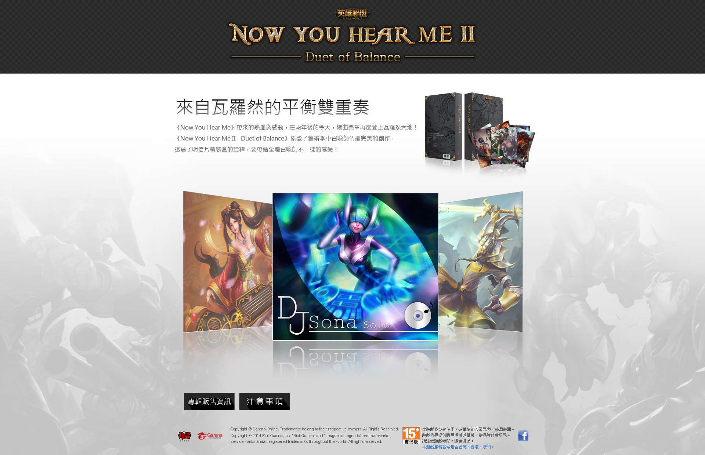
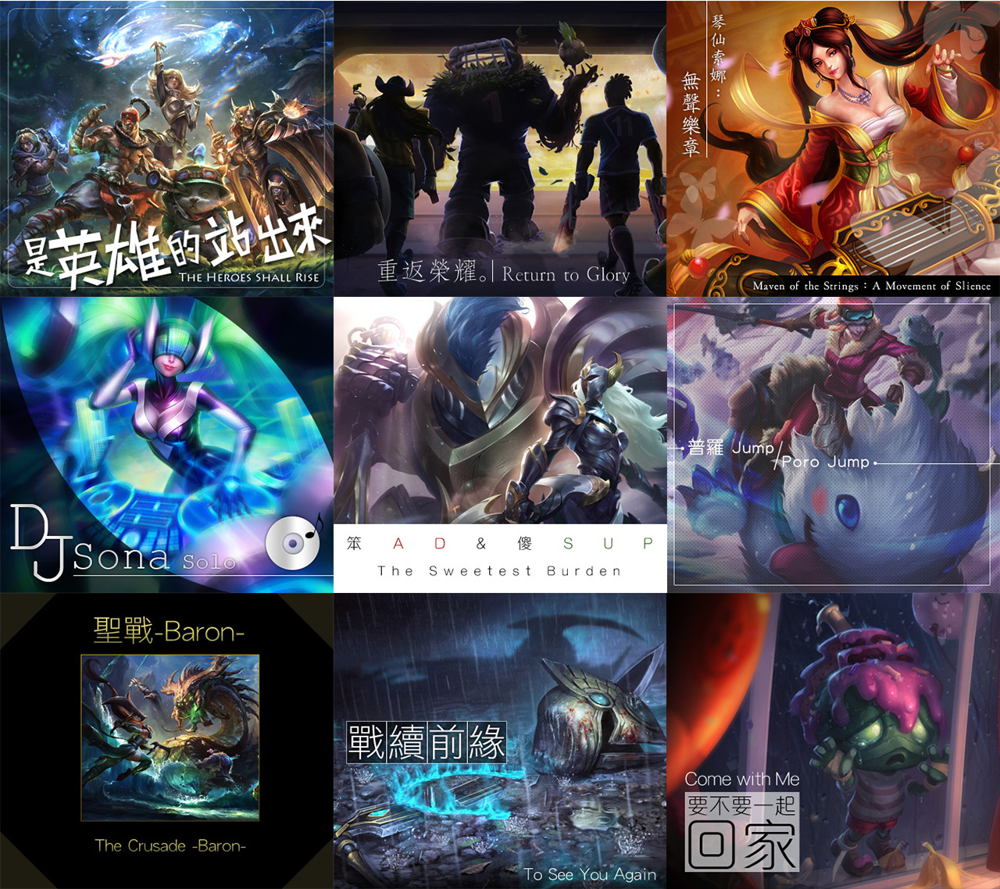

英雄聯盟 Now You Hear Me II
負責項目
- 網頁視覺設計
- 網頁切版
- 模擬曲目封面設計
作品介紹
這是集合了一些喜愛英雄聯盟的創作家，他們所創作之歌曲的音樂合集。
當初營運提出的需求為，做成一種簡潔有質感（類似 APPLE 風格）的音樂試聽選單，於是就弄出了與以往遊戲網頁不同的視覺。
而每首曲目的封面，也是依曲名簡單設計了各種風格的意象圖。


這是集合了一些喜愛英雄聯盟的創作家，他們所創作之歌曲的音樂合集。
當初營運提出的需求為，做成一種簡潔有質感（類似 APPLE 風格）的音樂試聽選單，於是就弄出了與以往遊戲網頁不同的視覺。
而每首曲目的封面，也是依曲名簡單設計了各種風格的意象圖。